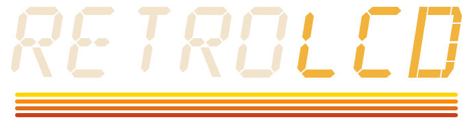

RetroLCD

Retro LCD watch faces for Garmin watches.
Seventies stripes and eighties segment displays, rebuilt for modern AMOLED watches. Our first faces are in beta now.
- Retro LCD
- Retro LCD Lite
- Alarm Chrono

Retro LCD watch faces for Garmin watches.
Seventies stripes and eighties segment displays, rebuilt for modern AMOLED watches. Our first faces are in beta now.